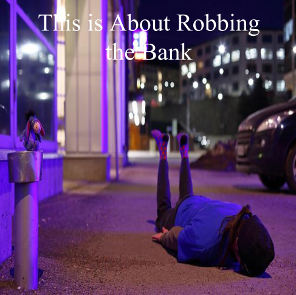

Challenge: Design a Band
Challenge Information
Design thinking is the process that designers go through before producing their final products. We are studying it because it will help us build our creative thinking skills.
The steps of DEEP design thinking are Discover, Empathy, Experiment and Produce.
The steps that we did in class to make the album cover were,
1) Interview 3 people about their preferences for Serifs, Color and Real or Abstract images
2) Find an Band name, Album Title and Album Cover Image
3) Create the album cover
Album Cover
Band Biography
Twaylor Sift is a young pop singer who was looking to form a great band. One day she decided to lie face down in front of a bank out of complete boredom. Out of nowhere, 3 anonymous people who coincidentally happened to be band members were looking for a singer to join their band. Although the 3 band members would not release their name in the case of an end of the world terrorist attack. Besides this, she decided to accept it and they all agreed to use the setting they met in as their first album cover and title. Twaylor Sift has become a big hit now featuring songs such as, “42” and “Good Blood”.